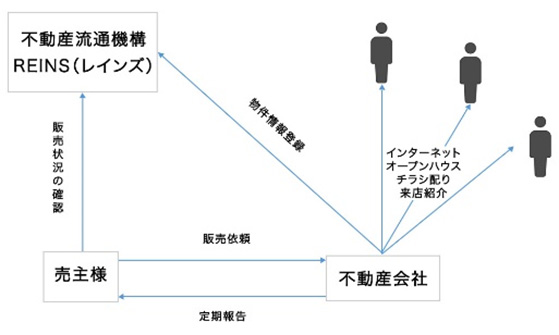

不動産を高く売りたい方におすすめの「仲介売却」
不動産売却にはいくつか方法がありますが、もっとも一般的な方法が「仲介売却」です。仲介売却とは、不動産会社が売り主様と買い主様の間に入って不動産物件を市場に売却する方法であり、高く売りやすいというメリットがあります。そのため、「できるだけ高く売りたい」と望む方に選ばれやすい売却方法です。
買い主様と売り主様をつなぐ売却方法です
仲介売却の「仲介」は、不動産会社が売り主様と買い主様の間を取り持ち、売買契約を成立させることを指します。不動産の売却方法としては、もっとも一般的な方法です。
仲介売却では、不動産会社に物件を査定してもらい、不動産の適正価格を算出してから売却を依頼します。売り主様と買い主様の間に不動産会社が入ることで、法律や土地の条件なども踏まえた詳細な価格を算出できるというのが、大きなメリットです。
販売活動は手間も労力もかかりますが、仲介売却ならすべてを不動産会社に任せられるのも大きなポイントでしょう。ただし、買い主様が見つかった場合には、成功報酬として仲介手数料を不動産会社に支払います。
仲介売却を選択すると、売り主様にどのようなメリットがあるのでしょうか
- 高額での売却が成功しやすい
- 物件の価格は売り主様自身が設定できるため、急いで売りたいという特別な事情がなければ、条件に合う買い主様が来るまで待つことができます。そのため、より希望条件に近い売却が可能になるでしょう。
- 販売活動を専門家に任せられる
- 不動産を売るための販売活動には、時間や手間がかかります。仲介売却であれば、手数料を支払う必要こそありますが、販売活動をすべて不動産会社に任せられるため、売り主様が時間や手間をかけることはありません。
- 資金計画や引っ越しの事前準備ができる
- 仲介売却では、買い主様に希望通りの売却が完了するまで、3カ月から半年ほどかかるのが一般的です。そのため、その期間を利用して、資金契約を立てたり引っ越しをしたりといった準備を進められます。
絶対に知っておいた方がいい、REINS（レインズ）の仕組みと機能

「REINS（レインズ）」とは「Real Estate Information Network System」の略称であり、不動産物件に関する情報交換の際に活用するコンピューターネットワークシステムです。全国の物件情報が登録された不動産会社共通のデータベースとなっており、売却する物件情報はREINSに登録する決まりとなっています。
不動産業者が持っている情報はREINSによるネットワークで集約され、不動産業者同士をつなげられるのが特徴です。そのため、以前は不動産会社を何件も回って調べなければならなかった物件情報が、どの不動産会社からでも調べられるようになっています。
仲介売却にはいろいろな契約の仕方があります
| メリット | デメリット | |
|---|---|---|
| 一般媒介契約 | 複数の不動産会社と同時に契約を結べます。情報を多く流しやすくなり、結果として成約の可能性が高まります。 | 立地条件によってはほとんど見てもらえません。また、REINSへの登録が必須ではないため、検索しづらくなる可能性があります。 |
| 専任媒介契約 | 1社としか契約を結べないものの、販売状況の報告義務などもあるため、契約した不動産会社はしっかり取り組んでくれます。 | 不動産売却のための販売活動は、すべて契約した1社に頼ることになり、他社のサービスは使えません。 |
| 専属専任媒介契約 | 1社としか契約を結べないものの、販売状況の報告義務があるため、契約した不動産会社はしっかり取り組んでくれます。 | 売り主様が自分で買い主様を見つける行為は禁止されています。そのため、すべて契約した不動産会社に任せなければなりません。 |
どうしても売りたいときの「買取保証」
すぐに不動産を現金化したい事情があったとしても、買い主様が見つからない限り売却はできません。不動産の条件が悪い場合などは、いつまでも売却が成立しない可能性もあります。そんな場合に助けとなる制度が「買取保証」です。
買取保証とは、一定期間が経っても売却できなかった不動産を、不動産会社が取り決めた価格で買い取る制度です。買取保証がついていれば、万が一買い主様が見つからなかった場合でも物件を買い取ってもらえるため、保険として利用することができます。価格は査定額を下回りますが、確実に売れるのが大きなメリットです。
基本的な仲介売却の流れをおさらいしておきましょう
- 1相場の確認
- まずは令和都市開発へ問い合わせて無料査定を受けます。査定によって、売却を考えている不動産の相場を確認しましょう。
- 2売却相談・物件調査・価格提示（査定書提出）
- 令和都市開発が現地調査を実施します。売却したい不動産の状況や周辺の環境、市場相場などの条件をもとに査定価格を算出し、提示します。
- 3媒介契約の締結
- 仲介売却が決定しましたら、媒介契約を締結。媒介契約には「専属専任媒介契約」「専任媒介契約」「一般媒介契約」と、いくつかの種類があります。
- 4売買活動・交渉
- 令和都市開発による販売活動や買い主様との交渉がスタート。チラシやインターネットなどを活用して、不動産の情報を流します。
- 5売買契約
- 不動産の購入をご希望の買い主様が見つかりましたら、売買契約となります。
- 6代金授受・物件引き渡し
- 設定した代金を受け取って、物件を引き渡します。
- 7譲渡税の納付
- 物件の引き渡しが完了しましたら、譲渡税を納付して仲介売却は完了です。